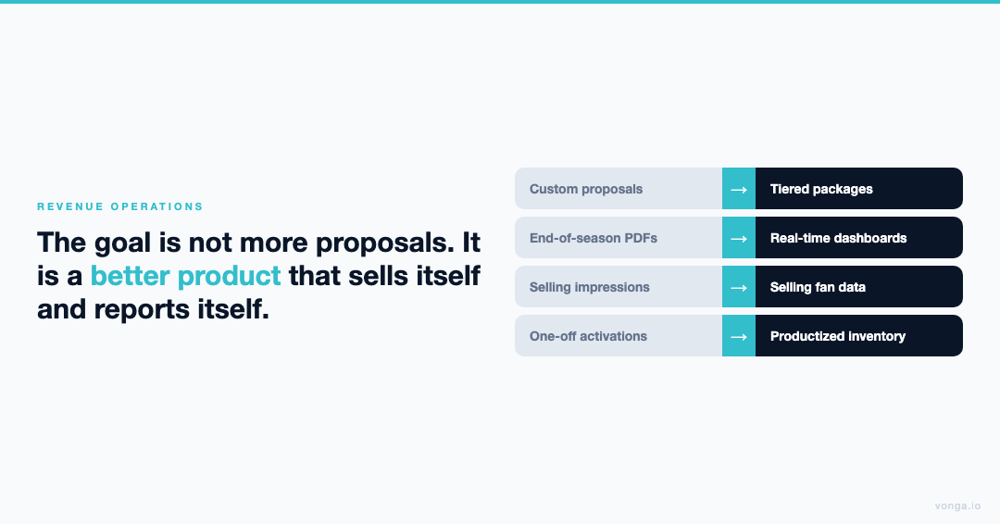
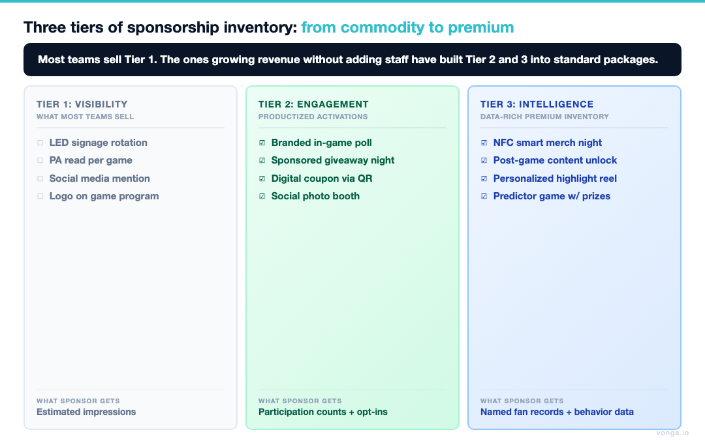
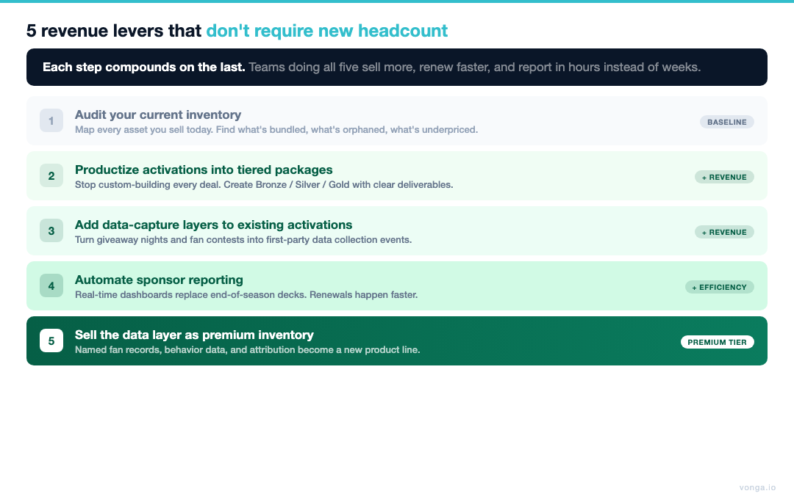
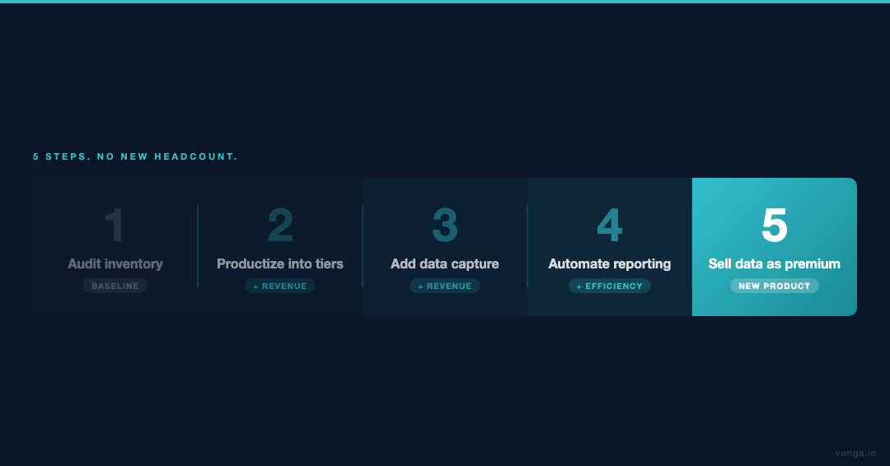

Executive Summary
Every partnership director has heard the same directive: grow revenue, hold headcount. The standard response of more calls, more proposals, and longer hours has a ceiling. The structural response is different: change what you're selling, and change how you prove it worked.
BCG's February 2026 report Beyond Media Rights identifies the core lever: "winning leagues and teams will be defined by how quickly they can build direct fan relationships and adopt new forms of engagement." Teams that have codified this into sellable inventory are outperforming peers not by working harder, but by working with a fundamentally different product set.
This guide outlines five operational strategies for growing sponsorship revenue per employee without increasing headcount. Each approach is designed for lean front offices where sales, activation, and fulfillment are often handled by the same two or three people.
The Revenue-Per-Employee Problem in Sports Sponsorships
The average mid-market sports franchise runs a partnership team of three to seven people responsible for selling, servicing, and reporting on a portfolio that may include 20–50 sponsors. As brand expectations escalate across data, attribution, and personalized activations, the workload per sponsor has grown while team sizes have not.
The teams winning this dynamic are not hiring. They are productizing. They are converting custom, high-labor activations into standardized, scalable inventory and automating the reporting that historically consumed renewal season.
"The goal is not more proposals. It is a better product that sells itself and reports itself."

The five strategies below address both sides of that equation: building better product, and building the proof infrastructure that drives renewals and upsells.
Five Strategies to Increase Sponsorship Revenue Without Adding Staff
1. Productize Your Data Capture Assets Before You Sell Them
The Problem: Most teams build activations custom for each sponsor. This approach is relationship-appropriate but operationally unsustainable. Custom activations require custom buildouts, custom reporting, and custom troubleshooting across every partner.
The Strategy: Create two or three standardized "Fan Engagement Bundles" that can be sold off-the-shelf with defined deliverables, defined data outputs, and defined reporting formats. These bundles might include a digital sweep, a QR-triggered in-arena predictor game, and a post-game content unlock, combined into a named, tiered package.
Why It Works for Staff Efficiency: When the product is standardized, your sales team pitches faster, your activation team executes without reinvention, and your reporting team generates dashboards instead of custom decks.
Revenue Impact: Standardized packages enable faster sales cycles and cleaner renewals. Sponsors know what they're buying. Teams know what they're delivering. The conversation focuses on expansion rather than explanation.
When you give sponsors proof, not promises, with a product structure they can evaluate in advance, close rates improve and renewal conversations start from a higher baseline.

2. Turn Merchandise Into a Data Channel and Price It Accordingly
The Problem: Promotional merchandise giveaways such as t-shirt cannons, rally towels, and promo nights are budgeted as expenses. They generate brand impressions, not leads. They are not sellable as premium inventory because they produce no premium output.
The Strategy: Upgrade key giveaway items with NFC technology. When a fan taps a connected hat, jersey, or scarf, they trigger a sponsor-branded experience: a discount code, exclusive content, or a VIP contest. The tap captures an opted-in, identified fan record routed directly to the sponsor.
Revenue Impact: An NFC-enabled premium merchandise night is no longer a $10,000 expense line. It is a new category of inventory, sellable at a premium because it delivers something brands can measure. A sponsor paying for 5,000 distributed items now receives 5,000 potential lead records, not 5,000 branded fabric swatches.
Staff Efficiency: The technology executes the data capture. No additional staff is needed at the activation. The team's role shifts from logistics to configuration and reporting.
Turn merchandise into a data channel, and a cost center becomes a revenue line.
This is how teams like the Dallas Cowboys and Las Vegas Raiders maximize the commercial value of physical assets without increasing activation headcount.
3. Build Tiered "Always-On" Digital Inventory That Runs Without Game Day Staff
The Problem: Most sponsorship revenue is tied to game day. That means revenue is capped by the number of home games: typically 41 in the NBA/NHL and 17 to 18 in the NFL. The week between games is unmonetized.
The Strategy: Develop a tiered digital sponsorship program operating year-round: automated weekly email newsletters, app-based trivia, season-long predictor leagues. These are configured once, run automatically, and generate engagement and data 365 days a year.
Example Structure:
- Bronze Tier: Weekly email newsletter sponsorship (automated send, automated reporting)
- Silver Tier: "Tuesday Trivia" season package (pre-scheduled content, automated lead capture)
- Gold Tier: Season-long prediction league (persistent engagement, cumulative data)
Revenue Impact: Always-on inventory unlocks a revenue category that does not compete with game day inventory. It can be sold to a different tier of sponsor, specifically local and regional brands that cannot afford full-season arena packages, expanding the buyer universe without expanding the sales team.
Staff Efficiency: Once configured, these programs run without staff involvement. Reporting is automated. Renewals are driven by the data the programs generate, not by staff-prepared decks. (See Exhibit 1 for a sample tiered digital inventory pricing structure.)
4. Automate ROI Reporting to Convert Renewal Conversations Into Upsell Conversations
The Problem: End-of-season wrap reports are labor-intensive to produce, often arrive late, and are inherently backward-looking. By the time a sponsor sees the data, the renewal decision has already been shaped by their gut feeling about the partnership rather than by the numbers.
The Strategy: Transition from manual wrap reports to real-time, dashboard-driven sponsor reporting. Sponsors receive login access to a live dashboard showing their activation metrics, including leads captured, engagements, and redemption rates, on a rolling basis.
Revenue Impact: Real-time transparency fundamentally changes the renewal dynamic. When a sponsor has been watching their metrics grow for six months, the renewal conversation shifts from "was it worth it?" to "how do we expand it next season?"
Retaining a sponsor costs a fraction of acquiring a new one. Upselling a retained sponsor costs even less. Automated reporting is not an operational nicety. It is the most efficient revenue growth lever available.
"By providing transparent, real-time metrics, teams give sponsors proof, not promises. Renewal conversations then start from a position of demonstrated value, not persuasion."
Staff Efficiency: A partnership manager who is not building PowerPoint decks for 30 sponsors is a partnership manager closing new business. The time recaptured from manual reporting is directly reallocatable to acquisition.
5. Package Sponsor-Funded Fan Experiences as Net-New Revenue
The Problem: Teams spend their own budget on concourse entertainment, VIP activations, and fan experience upgrades without extracting full commercial value from those investments.
The Strategy: Reframe premium fan experiences as sponsor-funded assets. Instead of the team paying for an Express Entry lane, a courtside fan experience, or a premium halftime activation, package these as sponsor-owned properties. The sponsor pays a premium for naming rights and data capture rights at that touchpoint.
Example: A regional automotive group sponsors the "Express Entry VIP Gate." Sponsorship fee covers the team's infrastructure cost plus margin. The sponsor handles on-site activation logistics. The team generates a net revenue line from what was previously a cost line, with no additional staff required.
Revenue Impact: This approach creates inventory where none previously existed, funded by external budget rather than the team's operating expenses. It is a structural margin improvement.
Staff Efficiency: When sponsor-funded, the activation logistics burden transfers to the partner. The team's role is contracting and reporting, not event management.

Key Takeaways
The five strategies share a common logic: Convert manual, custom, impression-based work into automated, standardized, data-driven products. Revenue scales. Staff requirements do not.
| Strategy | Revenue Lever | Staff Impact |
|---|---|---|
| Productize data assets | Faster sales cycles, cleaner renewals | Less custom buildout |
| NFC merchandise | New premium inventory category | Tech automates execution |
| Always-on digital | Year-round revenue, expanded buyer pool | Automated delivery + reporting |
| Automated ROI reporting | Higher renewal + upsell rates | Time recaptured from deck prep |
| Sponsor-funded experiences | Net-new revenue from existing assets | Logistics transferred to partner |

(See Exhibit 2 for a revenue-per-employee benchmarking framework across mid-market franchises.)
Frequently Asked Questions
How can sports teams increase sponsorship revenue without hiring more salespeople?
By shifting from custom, impression-based inventory to standardized, data-driven packages and automating reporting. Productized inventory sells faster, fulfills more efficiently, and renews at higher rates, increasing revenue per existing employee rather than requiring additional headcount.
What is "always-on" digital sponsorship inventory?
Always-on inventory refers to digital sponsorship assets that operate year-round independent of game schedule: weekly newsletters, digital trivia, and prediction leagues. Once configured, they run automatically, generate continuous fan engagement data, and are sold as seasonal or annual packages to sponsors.
How does NFC merchandise generate sponsorship revenue?
NFC-enabled items (hats, jerseys, scarves) trigger a branded digital experience when a fan taps their phone to the item. That interaction captures an identified, opted-in fan record. Teams sell this as premium inventory, priced above traditional giveaway sponsorships because it delivers leads, not just impressions.
What metrics should be included in automated sponsor ROI reporting?
Core metrics include: number of identified leads captured, opt-in rate, content engagement (opens, clicks), redemption rate (offers or collectibles), and where available, downstream conversion data from sponsor-side tracking. The goal is real-time visibility, not retrospective decks.
What is the most efficient way for a lean front office to retain sponsors?
Automated, real-time reporting. Sponsors who can see their metrics on a live dashboard are significantly more likely to renew and upsell than sponsors who receive a one-time end-of-season wrap deck. Retention is cheaper than acquisition, and reporting is the most reliable retention tool.
Download the free one-page guide: "The Lean Front Office Sponsorship Pricing Matrix," a structured framework for pricing digital and physical assets to maximize margin with your current team size.